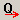

Quick Guide
This guide gives you a short overview on how to use FileZilla. By default you don't have to configure FileZilla, so you can start directly working with the program.
1. Connecting to an FTP server
To connect to an FTP server, enter the address of the server into the host field of the Quickconnect bar. If it is a special server type like an SFTP server, add the protocol in front of the address. In case of an SFTP server, start the address with 'sftp://'. Enter the port of the server into the port field if it is not the default port (21 for FTP, 22 for SFTP). If a username / password is required, enter it in the corresponding fields. Click on Quickconnect or press Enter to connect to the server.

2. Navigating on the server
After a successful connection attempt, a list of files and folders appears on the right side of the main window. The current folder is listed in the edit field on the top. You can change the current folder by double-clicking a folder or by entering the folder name into the edit field and pressing enter. You may also right-click the file and folder list and select Open from the context menu to change the current folder. You will notice a folder called ".." displayed in all directories. This folder allows you to go up to the parent directory of the current folder.

3. Navigating on your machine
Navigating on your machine works almost like
navigating on the server. There's only one addition: The folders on your machine
are arranged in a tree for faster navigation. A tree is also available for the
remote side, but it is hidden by default. The remote tree can be shown anytime
by clicking on the remote tree icon in the toolbar.

To change the current folder either on your machine or on the server, just
select a tree item in the appropriate tree.

4. Transferring files
You can upload or download a file by double-clicking on it. It will be added to the transfer queue and the transfer starts automatically. To transfer folders and/or multiple files, select them and right-click the selection. Then you can click on Upload/Download in the popup menu.

You can also drag the files from one side and drop them on the other side. To add files to the queue so that they will be transferred later, select them and click Add to Queue from the popup menu. You may also drag the files directly into the queue. Click on the

button on the toolbar to start the transfer.